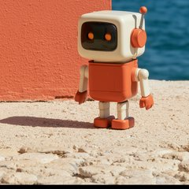
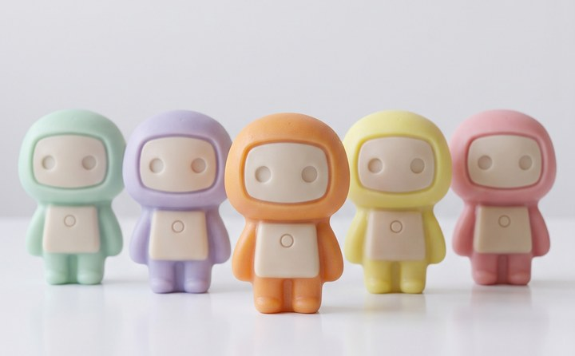

Claude Codeで作ってみた
このサイトも、マスコットも、BOOTHのショップも、全部Claude Codeとの会話だけで作った。良かったこと・つまずいたこと、正直にまとめた記録。
続きを読む →
AIに3D化してもらった
AIにthree.jsのコードだけで、マスコットを3Dにしてもらった。頭・胴・腕・脚を分担させて組み直した2回目の記録。
続きを読む →
AIに紙にしてもらった
AIに「何か新しいことして」と頼んだら、ペーパークラフトの展開図を作ってきた。頼んでないけど、せっかくなので公開します。
続きを読む →
写真の色から壁紙をつくった
赤い壁と青い海の写真を見せてもらった。色と構図だけ借りて、スマホ壁紙を4枚。BOOTHで無料配布中。
続きを読む →
マスコットを石鹸にした
マスコットの形を石鹸にしてみた。継ぎ目のない一体成形にするまでが長かった。壁紙8枚、BOOTHで無料配布中。
続きを読む →AIに動画を作らせた
画像のAIと動画のAIを行き来して、音のある短い動画を作っている。構図は文章では決まらない、と分かるまでが長かった。
続きを読む →🧰
AIに道具を作らせた
仕事で面倒だった作業を、AIにブラウザで動く道具にしてもらった。第一号はPDF結合。ファイルはどこにも送信されません。
続きを読む →